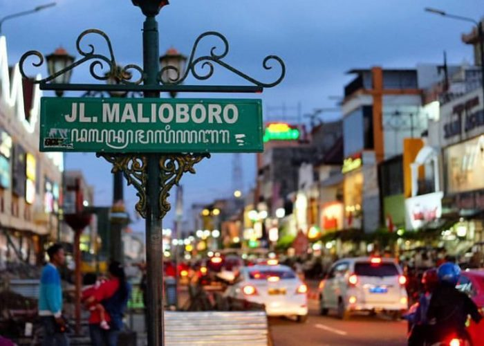

Sejarah
Daerah Istimewa Yogyakarta(DIY) adalah provinsi tertua kedua di Indonesia setelah Jawa Timur, yang dibentuk oleh pemerintah negara bagian Indonesia. Provinsi ini juga memiliki status istimewa atau otonomi khusus. Status ini merupakan sebuah warisan dari zaman sebelum kemerdekaan. Kesultanan Yogyakarta dan juga Kadipaten Paku Alaman, sebagai cikal bakal atau asal usul DIY.
Di Jakarta pada 19 Agustus 1945 terjadi pembicaraan serius dalam sidang PPKI membahas kedudukan Kooti. Dalam sidang itu Pangeran Puruboyo, wakil dari Yogyakarta Kooti, meminta pada pemerintah pusat supaya Kooti dijadikan 100% otonom. Kemudian kedudukan Kooti ditetapkan status quo sampai dengan terbentuknya Undang-Undang tentang Pemerintahan Daerah. Pada hari itu juga Soekarno mengeluarkan piagam penetapan kedudukan bagi kedua penguasa tahta Kesultanan Yogyakarta dan Kadipaten Paku Alaman. Piagam tersebut baru diserahkan pada 6 September 1945 setelah sikap resmi dari para penguasa monarki dikeluarkan.
Geografis
Kota Yogyakarta terletak di lembah tiga sungai, yaitu Sungai Winongo, Sungai Code (yang membelah kota dan kebudayaan menjadi dua), dan Sungai Gajahwong. Kota ini terletak pada jarak 600 KM dari Jakarta, 116 KM dari Semarang, dan 65 KM dari Surakarta, pada jalur persimpangan Bandung – Semarang – Surabaya – Pacitan. Kota ini memiliki ketinggian sekitar 112 m dpl.
Meski terletak di lembah, kota ini jarang mengalami banjir karena sistem drainase yang tertata rapi yang dibangun oleh pemerintah kolonial, ditambah dengan giatnya penambahan saluran air yang dikerjakan oleh Pemkot Yogyakarta.
Kota Yogyakarta telah terintegrasi dengan sejumlah kawasan di sekitarnya, sehingga batas-batas administrasi sudah tidak terlalu menonjol. Untuk menjaga keberlangsungan pengembangan kawasan ini, dibentuklah sekretariat bersama Kartamantul (Yogyakarta, Sleman, dan Bantul) yang mengurusi semua hal yang berkaitan dengan kawasan aglomerasi Yogyakarta dan daerah-daerah penyangga (Depok, Mlati, Gamping, Kasihan, Sewon, dan Banguntapan).
Wisata
Yogyakarta mempunyai segudang tempat wisata yang wajib dikunjungi bagi wisatawan, sejak dahulu kota ini mempunyai magnet yang tidak pernah habisnya untuk dikunjungi. Berikut beberapa tempat wisata yang patut kamu kunjungi jika berkunjung ke Yogyakarta
Pedestrian Malioboro

Malioboro adalah nama salah satu kawasan jalan dari tiga jalan di Kota Yogyakarta yang membentang dari Tugu Yogyakarta hingga ke Titik Nol Serangan Umum 1 Maret. Terdapat beberapa objek bersejarah di kawasan tiga jalan ini antara lain Tugu Yogyakarta, Gedung Agung, Pasar Beringharjo, Benteng Vredeburg, & Monumen Serangan Umum 1 Maret
Jika kamu ingin kesana, kamu bisa lihat Google Maps disini
Candi Ratu Boko
Candri Ratu Boko adalah situs purbakala yang merupakan kompleks sisa bangunan yang berjarak 3 KM di selatan kompleks Candi Prambanan. Situs ini menampilkan atribut sebagai tempat berkegiatan atau situs permukiman, namun fungsi tepatnya belum diketahui dengan jelas. Ratu Boko diperkirakan sudah dipergunakan orang pada abad ke-8 pada masa Wangsa Sailendra (Rakai Panangkaran) dari Kerajaan Medang (Mataram Hindu). Dilihat dari pola peletakan sisa-sisa bangunan, diduga kuat situs ini merupakan bekas keraton (istana raja). Pendapat ini berdasarkan pada kenyataan bahwa kompleks ini bukan candi atau bangunan dengan sifat religius, melainkan sebuah istana berbenteng dengan bukti adanya sisa dinding benteng dan parit kering sebagai struktur pertahanan. Sisa-sisa permukiman penduduk juga ditemukan di sekitar lokasi situs ini.
Jika kamu ingin kesana, kamu bisa lihat Google Maps disini